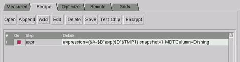

Expression-based
optimizations work differently from typical multi-parameter optimizations.
A major difference is that the recipe must contain only the expression
step.
The following example walks through fitting
a function for trench depth and dishing, with a dependency on trench
width. What makes this situation fit well to an expression recipe
is that a complex function has a dependency on a measured property.
Procedure
- Fill in the MD file with the
following values:
The data you want to fit.
In general, this would be Erosion, ThickT (thickness in the trench
region), ThickNT (thickness in the non-trench region), Z1, or Z2.
A positive weight in the
associated weighting column. For Erosion, the associated weighting
column is WE; for ThickT, it is WTT; and so on.
The initial values for
the parameters you intend to use. These should go in the TMP1, TMP2,
TMP3, … TMP10 columns.
For this example, because the
goal is to fit trench depth and dishing, the data to fit goes in
the Dishing column.
Because the data is in the
Dishing column, the WD column values are set to 1. In the CMP Model
Builder window, you can set all values with two clicks in the Measured tab:
select the column, and then click the Enable button.
Because the results depend
on trench width, the trench width values go in TMP1. If you are
using the GUI, you may need to click + to
display the TMP columns.
If X and Y coordinates are
not used in the expression and they are not already in the initial
MD, their values can be the same for all rows as they will be ignored.
- Create a process recipe whose
only step is expression. This can be done by editing a text file
or using the GUI.
When expression is used, it
should be the only command in the recipe.
For this example, the expression
to optimize is
($A+$B*exp($D*$TMP1)
Parameters A, B, and D are
values that will be fitted during optimization. $TMP1 refers to
the data in the MDT in the TMP1 column. In Step 1, this was filled
with measured trench width values. Any standard Tcl math operators
can be used, such as those listed in “Numeric Expressions in Parameters”.
The snapshot in this example
is set to 1. You should set yours to a value used by data in the
MDT. If the snapshot values do not match, optimization does not
run.
The MDTColumn is set to Dishing,
which means simulated values will be compared to measured Dishing
data, and the expression’s values will appear in SDishing in the
table.
Figure 1. Expression-Only Recipe
The expression can reference
data from more than one column of the MDT using the form “$colname”.
- Set the optimization ranges
for the parameters. This can be done at the command line (see the cmpoptimize shell command, especially the
model tuning examples), but the GUI is recommended.
- In the CMP Model Builder window,
load the MD file in the Measured tab and
the recipe, if you have not already.
- Click the Optimize tab.
The expression parameters are listed in the table.
- Adjust the parameter order
of optimization with the Up/Down buttons and specify each parameter’s
range (Begin, End, and Level columns).
In the expression shown in Figure 1, the parameters that need to be set
are A, B, and D. The data referred to by $TMP1 will not be optimized.
- Run the optimization.
Results
The parameter values that produce
the lowest error, measured as RMS between the MDTColumn values and
the overall value of the expression, appear in the “Best” column
in the Optimize tab.
After the run completes, the MD Table
shows the simulated values in the indicated column. In this example,
the values appear in SDishing because MDTColumn was set to Dishing.
To test the fit of the values, accept
the Best values. Replace the fitted parameters (A, B, and D) with
the Best values and then use the expression in a model in a typical
recipe.